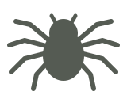

FIELD NOTE2026年1月1日

Typhochlaena seladoniaTEST-001
SPECIMEN IMAGE · NOT RECORDED脱皮タランチュラ
TEST-001
Typhochlaena seladonia
テスト飼育者2026年1月1日表示確認用のサンプル記録です。
記録給餌・脱皮・成長を個体ごとに
相談必要なときだけ飼育者へ共有
紹介共有リンクでそのまま紹介

TEST-001
表示確認用のサンプル記録です。